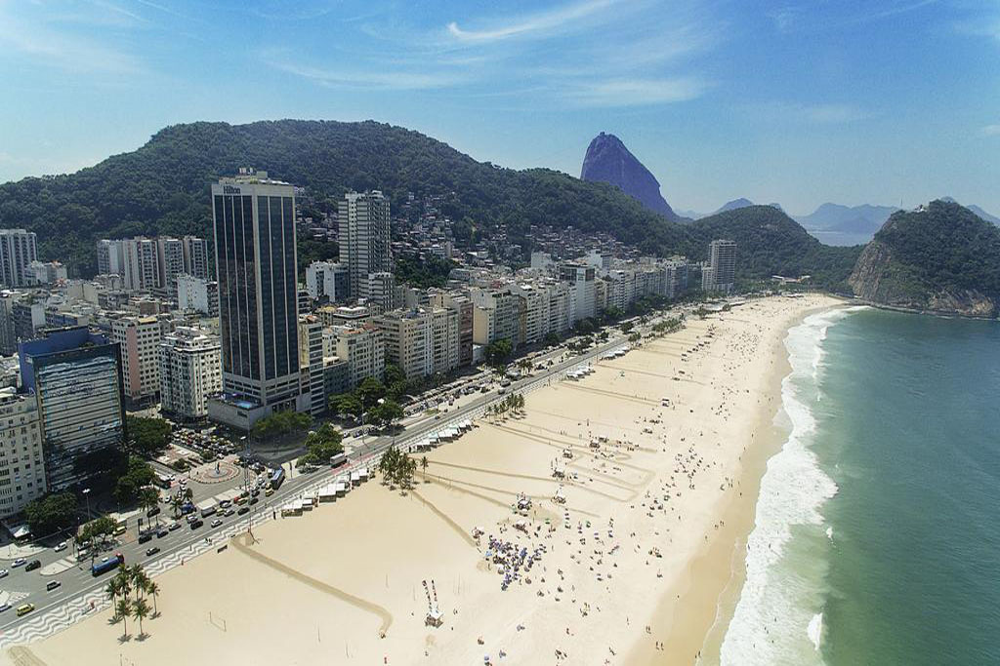
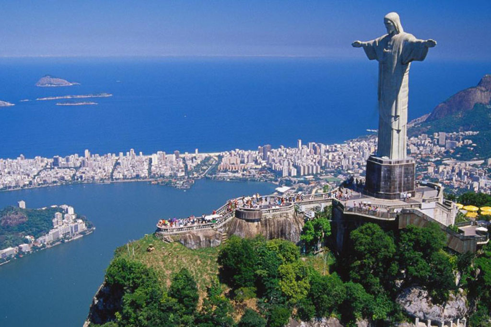
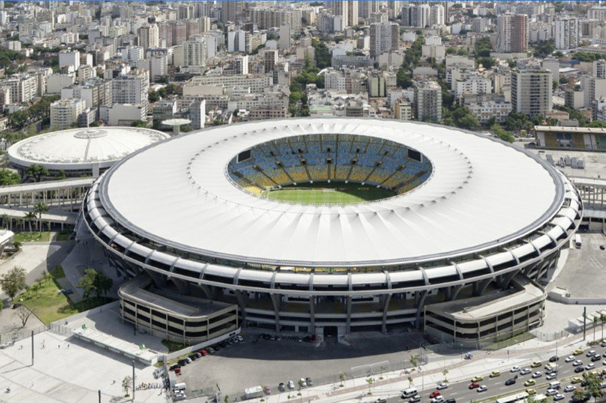

A região que ocupa atualmente a cidade do Rio de Janeiro foi descoberta no dia 1º de janeiro de 1502 por uma expedição portuguesa comandada por Gaspar de Lemos, que acreditou ter chegado à desembocadura de um grande rio, assim, batizou a baía com o nome de Rio de Janeiro. Contudo, foram os franceses que primeiro se estabeleceram na região e competiam com os portugueses no comércio madeireiro. Os portugueses estabeleceram serrarias naquela localidade e, em resposta à ameaça da presença portuguesa, os franceses trouxeram colonos para habitar e explorar o lugar, em 1555. Depois de anos de luta os franceses foram expulsos.
Como resposta às intenções francesas, no dia 1º de março de 1565, Estácio de Sá funda a cidade de São Sebastião do Rio de Janeiro. A cidade possuía ruas irregulares e estilo português medieval. A expulsão definitiva dos franceses ocorreu em 1567.
Devido à posição estratégica da cidade na Baía de Guanabara, desenvolveu-se ali uma zona portuária e comercial (madeira, pesca e cana-de-açúcar), desta forma, a população também aumentou. Em 1660, a população daquela cidade contava com 6000 índios, 750 portugueses e 100 negros. No fim do século XVII e início do século XVIII, a descoberta de metais, especialmente ouro, em Minas Gerais, fez com que o Rio de Janeiro se transformasse numa ponte entre as minas e a Europa.
No final do século XVIII, a cidade foi abalada por uma crise econômica, as minas já não produziam tanto e havia outros países sul-americanos que competiam com o Brasil na produção de cana-de-açúcar. Contudo, o cultivo do café, a chegada da família real, em 1808, e o conseqüente translado do governo português para a colônia deram um novo alento à economia da cidade. Nesta época, a realeza construiu igrejas e palácios. Na segunda metade do século XIX, a instalação de vias férreas trouxe um novo impulso à produção agrícola e de café, começavam a aparecer as primeiras indústrias no centro da cidade, a iluminação a gás e circulavam transportes com tração animal.
A cidade havia crescido bastante, no final do século XIX, contava com 800.000 habitantes e os problemas sanitários, de emprego, habitacionais e as constantes epidemias de varíola, tuberculose e febre amarela castigavam a então capital do Brasil. Em 1903, Francisco Pereira passos tornou-se prefeito da cidade. Durante sua administração foram criadas avenidas e parques e também um novo porto, casas sem condições adequadas de higiene foram demolidas levando a população pobre a viver nos subúrbios. A cidade do Rio de Janeiro conheceu seu maior esplendor entre 1920 e 1950, quando pessoas do mundo inteiro vinham atraídas pela sua imagem romântica, seus cassinos e suas belezas naturais. Em 1960, deixou de ser capital do país.
  